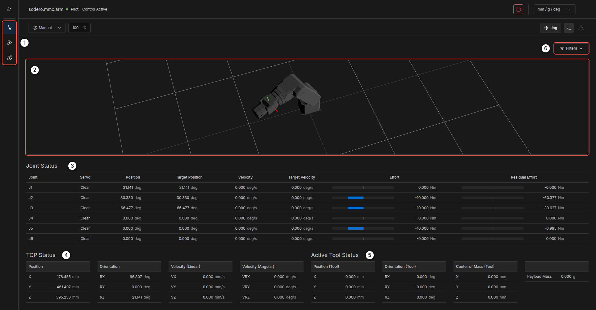
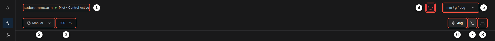
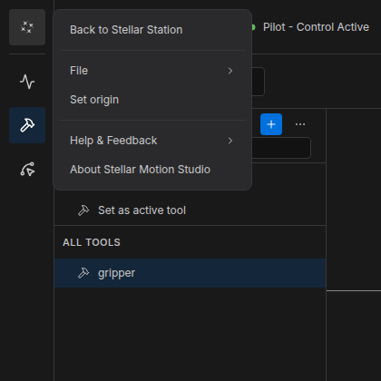
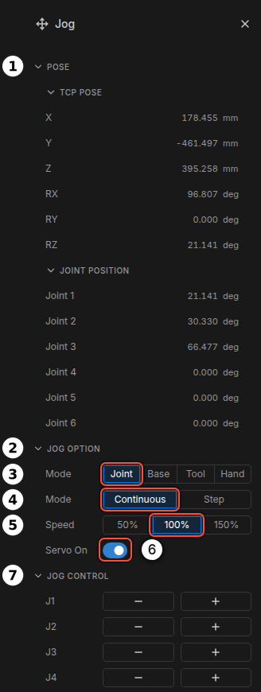
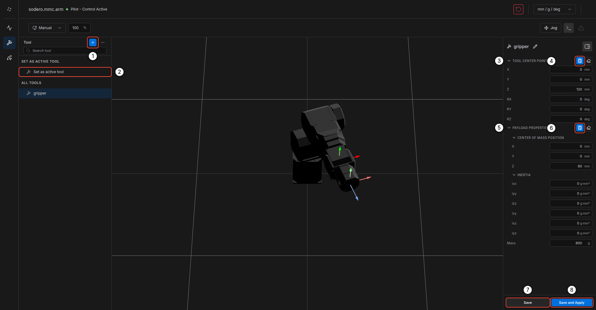
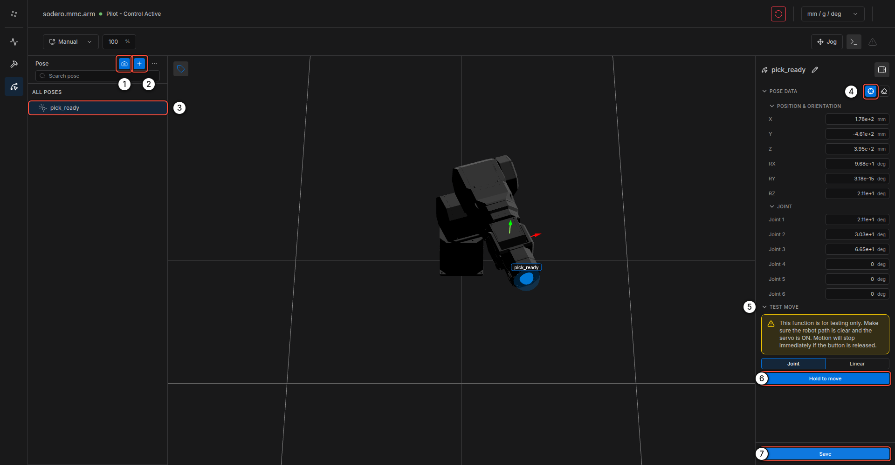

Motion Studio¶
Stellar Motion Studio is the controller UI for manipulators. A Motion Studio node (sodero.mmc.NAME) runs the arm's real-time controller: kinematics, dynamics, trajectory generation and safety limits from the arm's .sdd document. The Motion Studio web UI lets you watch the arm in 3D, jog it, define tools and teach poses.
1. Open Motion Studio¶
- On the Station, add a Motion Studio node and an Actuator gateway, load the
.sddand.gwdocuments and connectservo_link(Nodes and Connections). - Start the gateway, then the Motion Studio node.
- Click Stellar Motion Studio in the node's CONTROL section. Motion Studio opens in a new tab for that arm.
2. Screen Layout¶


| No. | Item | Description |
|---|---|---|
| 1 | Pages | Home, Tool and Pose |
| 2 | 3D view | The arm in its current pose, with its 3D model from the .sdd |
| 3 | Joint Status | Per joint: position, target position, velocity, target velocity, effort and residual effort |
| 4 | TCP Status | Position and orientation of the tool center point, and its linear and angular velocity |
| 5 | Active Tool Status | The active tool's TCP offset, center of mass and payload mass |
| 6 | Filters | Shows or hides the cards of the Home page |
Header¶


| No. | Item | Description |
|---|---|---|
| 1 | Robot and role | The controller node and whether this window has control (Pilot - Control Active) |
| 2 | Manual / Auto | Manual limits the linear speed of the tool center point in the controller's own motions and jogs, 0.25 m/s by default. It is a software limit for teaching, not a safety-rated reduced speed, and it does not limit rotations or Hand mode. Auto runs at the programmed speed. |
| 3 | Feed rate | Speed override in percent (10–150 %), applied to motion in progress |
| 4 | Error Reset | Clears a protective stop (a joint at its limit, a speed or torque limit, a detected collision) and resets drive faults. Switch the servo on again afterwards. If the arm stays stopped, stop and start the Motion Studio node. |
| 5 | Units | mm / g / deg or m / kg / radian |
| 6 | Jog | Opens the jog panel |
| 7 | Command log | Commands sent from this window |
| 8 | Alarm | Active alarms and notifications |
The Stellar mark at the top left opens the menu: Back to Stellar Station, File (import and export tools and poses), Set origin, Help & Feedback and About Stellar Motion Studio.


3. Jog the Arm¶
Click Jog in the header to open the jog panel.


- Switch Servo On ⑥.
- In JOG OPTION ②, choose the jog Mode ③:
- Joint: move one joint at a time (J1…Jn).
- Base: move the tool in the robot's base frame (X, Y, Z, RX, RY, RZ).
- Tool: move the tool in its own frame.
- Hand: hand guiding. The arm compensates gravity so you can move it by hand; the jog buttons are disabled. There is no damping and no speed limit, and collision detection stays active, so a firm push can cause a protective stop.
- Choose Continuous (moves while you hold a button) or Step (5° or 10 mm per click) ④, and the Speed ⑤ (50 %, 100 % or 150 %, about 0.04, 0.1 and 0.2 m/s at the tool).
- Hold − or + next to a joint or axis in JOG CONTROL ⑦. Motion stops when you release the button.
The POSE section ① shows the current TCP pose and joint positions.
Keep the hardware emergency stop within reach. Motion Studio has no on-screen emergency stop (Stop Controls). A continuous jog moves until the page receives the release of the button: if the browser or the connection fails while you hold it, the motion continues. Do not leave the window while jogging, and make sure the payload is set correctly before you use Hand mode.
4. Tools¶
The Tool page defines the tools mounted on the flange.


- Click + ① to add a tool and rename it with the pencil icon (for example
gripper). - Enter the TOOL CENTER POINT ③: the TCP position and orientation relative to the flange. The calculator icon ④ opens TCP Calibration, which computes the TCP from 3–10 poses that touch the same point.
- Enter the PAYLOAD PROPERTIES ⑤: center of mass, inertia and mass. The calculator icon ⑥ opens Payload Calibration.
- Click Save ⑦, or Save and Apply ⑧ to make it the active tool at once. Set as active tool ② activates a saved tool.
A wrong payload makes hand guiding and collision detection unreliable. Set the mass and center of mass of every tool you mount.
5. Poses¶
The Pose page stores named poses.


- Jog the arm to the pose, then click the camera icon ① (Save Current Pose). Or click + ② (Add pose) and fill in the values.
- Select the pose in the list ③. POSE DATA shows its TCP pose and joint positions; the icon ④ (Set from current) copies the current pose into it.
- TEST MOVE ⑤ moves the arm to the pose: choose Joint or Linear motion and hold Hold to move ⑥. The arm moves only while you hold the button.
- Click Save ⑦.
Saved poses appear as markers in the 3D view. Right-click a pose to copy it, duplicate it or delete it. Use File in the menu to export or import tools and poses.
6. Set the Origin¶
When an absolute encoder is replaced or the arm is reassembled, set the joint origins: menu › Set origin, choose the joint, enter its true angle and click Calibration. The servo stays off afterwards.
7. Program the Arm¶
Motion Studio is for setup and teaching. Programs run outside the UI and call the same controller:
| From | How |
|---|---|
| The SSH workspace | sodero tools call motion.move_j, motion.move_l, motion.get_tcp_pose and the other motion.* tools (sodero CLI) |
| A module on the Station | A module node connected to the Motion Studio node's manipulator port (Create Custom Modules) |
sodero tools call motion.get_tcp_pose --input '{"target": "sodero.mmc.arm"}'
sodero tools call motion.move_j --input '{"target": "sodero.mmc.arm",
"waypoints": [{"q": {"values": [0, 0, 1.5708, 0, 1.5708, 0]}, "vel": 0.5, "acc": 1.0}]}' --execute
Tools use SI units: radians, meters and seconds. Check a tool's arguments with sodero tools describe motion.move_j before you call it.